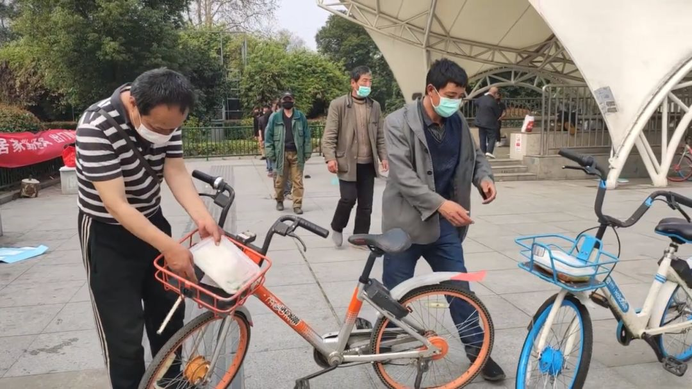

滞留湖北的5个外地人和他们的5种遭遇
原文链接 备份链接 01 泡面度日，住得提心吊胆 韩猛 | 滞留鄂州想回青岛 1月20日，我第一次和女朋友去她的鄂州老家。封城那天，我没注意到新闻。后来我租住在一个私人旅馆。当时旅馆被限制开放，外地人不予登记。我求了店主好久，最后商量成日 …

滞留者免费住上了宾馆，包三餐
“医院这个地方他们不敢来赶，怕传染，我到别处去连续好几天都被赶”。2月24日，滞留武汉的陈飞告诉某不愿具名的志愿者团队。
陈飞等二十多名滞留者在中山公园地铁口露宿了多日。这个地铁口和协和医院门诊楼相距不到50米，他们知道医院附近“危险”，但是实在“没地方待”。
这并不是个例。在武汉封城的第一个月内，滞留武汉的低收入群体在车库、公园、地下通道、医院勉强过活。
2月25日，湖北省疫情防控指挥部发布通告，要求各地政府及有关方面对各类滞鄂人员提供救助服务，对生活无着落、确有困难的人员，由各地设置集中安置点，提供食宿、医疗等基本生活保障。
3月1日，陈飞等一行人被安置到宾馆中，两人一间，包三餐。记者致电武汉各区民政局了解到，武汉正在以社区为单位，展开对滞留武汉困难人员的救助。酒店、临建房和文化活动用地都将进一步投入救助使用。
“一眼望不到头”
中山公园地铁站口有一条红色条幅写着“居家勤通风，出门戴口罩”，与他们的处境形成鲜明对比。

二十多名滞留者在协和医院附近的地铁口风餐露宿
在好心人送来棉被之前，他们用硬纸皮、泡沫板作床单，睡在地铁站下沉的楼梯处。有人将包裹、厚衣服放在共享单车的车筐里，方便带着身家来回走动。
由于武汉的饭店和超市暂停向个人开放，他们只去医院附近的垃圾桶找食物以及被用过的口罩。
他们之中有些打工者住在城郊或者武汉周边，平时乘坐公共交通回家。一位三十来岁滞留者来自孝感城区，他曾经试着骑共享单车回家，但在半路被拦下。武汉各区之间交通设卡，跨区行动需要通行证。
何秋秋其实能负担得起短期住宾馆的费用，但是想到每月要还的贷款和迟迟不能恢复的工作，她选择在医院借宿。医院有热水，有厕所，能避风，累了就蜷在候诊室的椅子上休息。
2月中旬，何秋秋得知有媒体记者采访了滞留者，感到回家有望。她开始在网上求助，期待问题在舆论的关注下得以解决。根据网友建议，她在抖音上发了滞留者的视频，还在滞留者微信群中动员大家去微博发求助帖。
然而，大多数滞留者已经“不抱希望”，群里没有什么人响应她。就像温水煮青蛙，滞留者在漫长的等待中越来越被动，最终陷入一潭绝望。
2月24日上午，武汉市疫情防控指挥部发布《关于加强进出武汉市车辆和人员管理的通告》（第17号），通告中表明“滞留在汉外地人员可以出城”。下午，防控指挥部发布第18号通告，宣布“第17号”通告无效。
这一天，何秋秋“心情起伏太大”，她强撑了三十三天的乐观崩塌。“一眼望不到头，真的灰心了”，她打算自己花钱住宾馆，然而武汉的宾馆大多都被征用作隔离点，不对个人营业。
经过接连的打击，她说自己精神状态很差，需要找心理医生聊聊。
来自浙江嘉兴黄燕夫妇在武汉做小生意，原本打算春节回家和老人孩子团聚。他们是滞留者中条件相对好的，住在出租屋，还能吃上热乎饭。
但他们也为严重积压的库存和日渐累计的贷款烦恼，账面上只出不入，他们感到“很压抑”，希望尽快回到老家投靠家人。
不管是底层劳动者、白领还是生意人，滞留在武汉的外地人面对的最大困难，一个是收入问题，一个是健康问题。经济压力叠加着对疫情的恐惧，他们身心的疲惫到了临界值。
社区承诺滞留人员“包食宿”
2月24日，某不愿具名的志愿组织将一箱八宝粥放在中山公园地铁口的空地上，滞留者涌上来一下抢光。后来，该组织的志愿者多次去到那里，带去了饭盒、牛奶和口罩。

志愿者为滞留在中山公园地铁站的人员送去热盒饭
该志愿组织成员田原介绍，他们的主要工作是为定点医院、方舱医院、隔离点和社区居民送物资。因为是自发组织的志愿团体，人力和运力都有限，无法保证每日为滞留者送去食物。
而另一批好心人每日为协和医院滞留者送去的热盒饭，也在三月初中断。民间志愿组织有其自发性，规模较小，资金有限，无法彻底解决滞留者的食宿问题。
中山公园地铁站的滞留者与何秋秋都表示，曾有民政局工作人员让他们去救助站。他们都担心那里平时是收容流浪汉的，去了以后生活不方便，不自由。
2月25日，湖北省疫情防控指挥部发布通告，要求对各类滞鄂人员提供救助服务。
通告指出，对于面临住宿困难的外地滞留人员，所在区政府妥善安置，并提供食宿安排等基本生活保障，对于生活确有困难的滞留者，由民政部门给予临时生活困难救助。
记者从多位武汉民政局工作人员处了解到，武汉各区正在以社区为单位，救助临时滞留人员。对于无投靠之处的滞留人员，确认无发热等新冠肺炎症状后，将免费安排食宿，直到武汉封城结束。
值得注意的是，临时安置地点也从单一的救助站扩展为到临建房、酒店和公共活动场所。
截至3月1日，记者向武汉各区民政局有关人员了解到，武昌区、江岸区、青山区表示救助站已经满员。这三个区加上洪山区、东湖新技术开发区都征用了一批酒店解决滞留人员的食宿问题。
汉阳区紧急建立了一批临建房，“流浪汉和滞留者分区域入住”。每人一间房，夫妻或者同伴可同住一间房，“房间配有wifi、空调和卫生间”。
蔡甸区相关工作人员告诉记者，该区目前还在收集滞留人员信息，将根据需求人数筹划安置点面积，“滞留者还需要等一段时间”。
江汉区、东西湖区目前的安置点是救助站。
滞留人员可以通过拨打各区民政局电话、前往所在地社区或者通过武汉市民政局线上申请救助渠道等三种方式寻求救助。

武汉民政局发布的滞留人员线上救助通道二维码
扫描线上救助渠道的二维码，滞留者填写个人信息和困难情形后，可选择的救助事项有需要住宿、需要就医、需要生活费以及需要就业或当志愿者。
 扫描二维码进入线上救助通道，需填写个人信息和所需救助方式
扫描二维码进入线上救助通道，需填写个人信息和所需救助方式
记者了解到，部分社区和社会志愿组织达成合作，由民间志愿者协助在线上和线下收集滞留武汉的困难人员信息，随后交由社区工作人员安排到救助点。
目前，经过志愿组织和社区的协调，中山公园地铁站的滞留者已经入住临时救助宾馆。他们两人一间房，房间里有充足的光线、独立卫生间和空调。宾馆提供饭盒，“40元的餐标，伙食很不错”，工作人员会将饭盒送到房间。
除了民政部门提供的临时安置点外，应聘社区、隔离点的防疫志愿者对于滞留人员也是一种“自救方法”。据了解，这种岗位往往包食宿，工作补贴从每天200元到300元左右。湖北大学设立新冠肺炎治愈人员隔离点以来，先后面向社会招聘了保安、网络维护、后勤保障等志愿者岗位。
专家：救助从粗放到细致
民政部原救灾救济司司长，北京师范大学中国公益研究院院长王振耀接受《中国慈善家》采访时表示，湖北地区的救助工作经历了粗放到细致的过程。“疫情前期，首先把人力和资源集中解决患者就医问题，现在疫情逐渐稳定，大家开始考虑滞留人群了，这是个向好的标志。”
对于武汉以社区为单位进行的滞留人员安置，王振耀分析，“这样分散安置的救助效率是最高的。在重大灾害面前，一般不选择大规模的聚集安置，安置单位规模越小，分得越细致，受灾人员的满意度越高。”
王振耀曾参与统筹汶川救灾工作，他表示分散安置的优势在2008年汶川救灾中得到了验证。“当时我们把受灾人群细分，妇女儿童分为一类，其中容易受伤的哺乳期母亲和小孩又分为一类。条件有限的情况下，如果伙食上分有肉的餐食和无肉的餐食，有肉的建议给妇女儿童。”
王振耀建议把滞留湖北人员按照灾区人员来处理，把临时救助、灾害救助制度激活，充分利用救助站体系，增加对社会组织和周边地区的调度，能有效解决滞留人员的问题。
我国2014年发布了《社会救助暂行办法》，其中明确了人民政府或者灾害救助应急综合协调机构应当“为受灾人员提供必要的食品、饮用水、衣被、取暖、临时住所、医疗防疫等应急救助”；对于生活无着人员应当提供“临时食宿、急病救治、协助返回等救助”。
另外，由于滞留武汉的部分低收入人群没有手机，对于政府公布的救助电话、线上救助申请渠道并不了解。王振耀建议救助站或社会组织的志愿者上街巡逻，做好这群人的安置工作。
（应受访者要求，何秋秋、陈飞、黄燕、田原为化名）
图片来源：受访者供图、网络截图
值班编辑：俞杨
推荐阅读
▼


原文链接 备份链接 01 泡面度日，住得提心吊胆 韩猛 | 滞留鄂州想回青岛 1月20日，我第一次和女朋友去她的鄂州老家。封城那天，我没注意到新闻。后来我租住在一个私人旅馆。当时旅馆被限制开放，外地人不予登记。我求了店主好久，最后商量成日 …
原文链接 备份链接 在曾经川流不息的都市中， 他们是城市交通最有力的一道保障 武汉某医院内病房患者 摄：黄孝光 至今回想起来，曾洪波仍然觉得不可思议，因为“一天之内要召集成立一个超过1300人的车队”。 他还是一头扎了进去。武汉前线，他把 …
原文链接 备份链接 武汉嫂子“汉骂”视频 “汉骂”嫂子和作家方方 数日前，一段微信语音在网上“一骂而红”，名叫“@雨儿”的业主在她所在的小区群里，用中气十足的武汉方言痛斥社区和中百超市推出“阴阳套餐”，社区推卸责任、置若罔闻。 “我们买一 …
原文链接 备份链接 武汉嫂子“汉骂”视频 “汉骂”嫂子和作家方方 数日前，一段微信语音在网上“一骂而红”，名叫“@雨儿”的业主在她所在的小区群里，用中气十足的武汉方言痛斥社区和中百超市推出“阴阳套餐”，社区推卸责任、置若罔闻。 “我们买一 …
原文链接 备份链接 访谈对象：患者家属/省委干部 采访/整理：画天 访谈时间：2月15日下午2点 我母亲是1月31号出现发热症状的，当时查了CT，说是有问题。一开始我们求助社区，要去医院，结果车子派不出来，什么忙也没帮上，都是我们自己解决 …